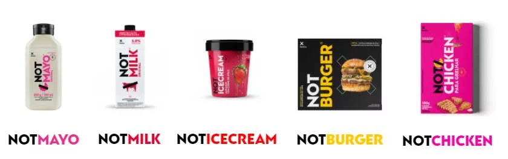

CIÊNCIAS DA NATUREZA
Alimentos à base de plantas - The NotCompany
Conheça uma empresa chilena com o objetivo de reinventar a indústria alimentícia por meio da inteligência artificial. The Not Company oferece produtos como carnes, hambúrgueres e leite constituídos 100% à base de plantas. Fundada em 2015, no Chile, por três tecnólogos: Matias Muchnick, Pablo Zamora e Karim Pichara, The Not Company, também chamada de NotCo, foi criada com o objetivo de utilizar a inteligência artificial. "Somos um grupo de gente não muito comum, com um objetivo comum", disse Matías Muchnick, fundador e CEO. Atualmente é propriedade parcial da The Craftory, Bezos Expeditions e outros, além de contar com diversos investidores. Criado por Karim Pichara, Giuseppe é a tecnologia que torna tudo realidade. Esta plaforma recebeu 7 patentes do Escritório de Patentes e Marcas Registradas dos Estados Unidos. Possui o portfólio mais avançado e completo conhecido atualmente no domínio da ciência de alimentos. Os príncipios de Giuseppe são conhecer a composição de ingredientes de origem animal e meios de encontrar componentes semelhantes nas mais de 300.000 plantas comestíveis existentes. A equipe de IA conta com Machine Learning, Engenheiros de Software, Designer, Chefs de Pesquisa, Cientista de Alimentos e Cientistas Analíticos, além de profissionais encarregados de transferir a tecnologia e as descobertas científicas para o restante da empresa e parceiros externos. A NotCo produz alimentos como leite feito de plantas e sua versão High Protein, Cremes, Carnes como hambúrgueres, frango, também feitas de plantas e maionese. Todos os produtos são livres de ovos, colesterol, glúten, gordura trans, transgênicos e lactose. A alimentação 100% vegetal tem uma alta demanda e uma forte tendência de crescimento no mercado. A NotCo não lida com animais na produção dos seus alimentos. Alimentos derivados de plantas têm impacto consideravelmente menor no meio ambiente. Diminuem o consumo de água, a pegada de carbono, a pressão sobre o espaço de terra e o desmatamento. Como, por exemplo, o NotBurguer que utiliza 93% menos água e 95% menos CO2 no processo de produção. No Brasil, a NotCo ainda está se instalando e sua demanda vem crescendo cada dia mais. Atualmente podem ser encontrados em 9 estabelecimentos como mercados e restaurantes na cidade de São Paulo.
Projeto Universitário Utiliza Inteligênicia Artificial para Montar Sua Dieta.
O projeto denominado DietBot tem como objetivo criar um plano nutricional customizado e personalizado utilizando informações sobre a ingestão alimentar do usuário apenas com a tecnologia da Inteligência Artificial. A Universidade Wageningen, localizada nos Países Baixos, começou a desenvolver o projeto em janeiro de 2023 e tem como previsão finalizar em dezembro de 2026. A ideia aqui é propagar conhecimento para o máximo de pessoas possível, de forma mais acessível com o uso da mais alta tecnologia. A questão de que muitas pessoas não possuem condição nem de obter conhecimento aprofundado sobre hábitos alimentares, muito menos contratar um serviço de nutricionista que auxiliaria e daria a elas um acompanhamento pessoal diariamente é bem discutida, principalmente aqui no Brasil. Segundo a página governamental do Ministério da Saúde, a conselheira nacional da saúde afirmou: “É fato que a comida saudável está cada vez mais distante da mesa dos brasileiros, o tipo de alimentação está mudando. Em 2022, os alimentos ultraprocessados se tornaram mais baratos do que a comida de verdade no Brasil e isso é uma situação gravíssima e está colocado no centro das discussões e das controvérsias em torno da reforma tributária” Sabendo que uma alimentação não saudável pode resultar em problemas sérios reduzindo a expectativa de vida das pessoas, desencadeando doenças cardíacas, diabetes, potencial de desenvolver um tipo de câncer, entre outros, esse projeto pode também influenciar o baixo ou zero consumo de produtos industrializados – reduziria o uso de plásticos, químicos presentes na composição dos alimentos, a alta coleta de recursos naturais sem reposição - além de optar por escolher alimentos que não terão um impacto negativo com o consumo deles para o meio ambiente, preservando tanto nossa saúde como a vida da Terra.